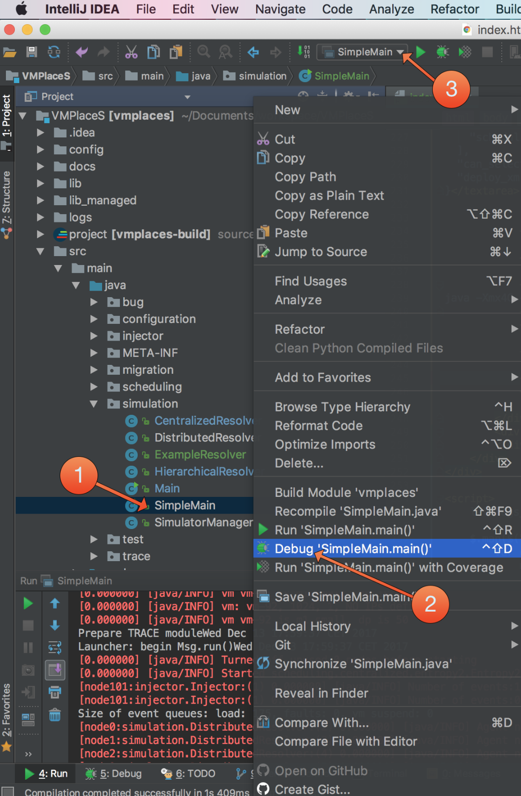
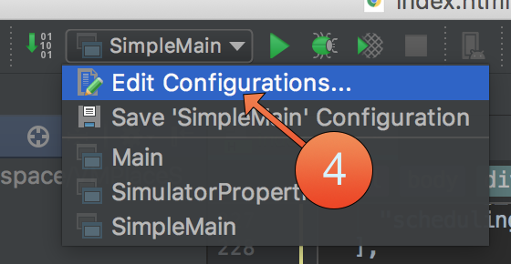
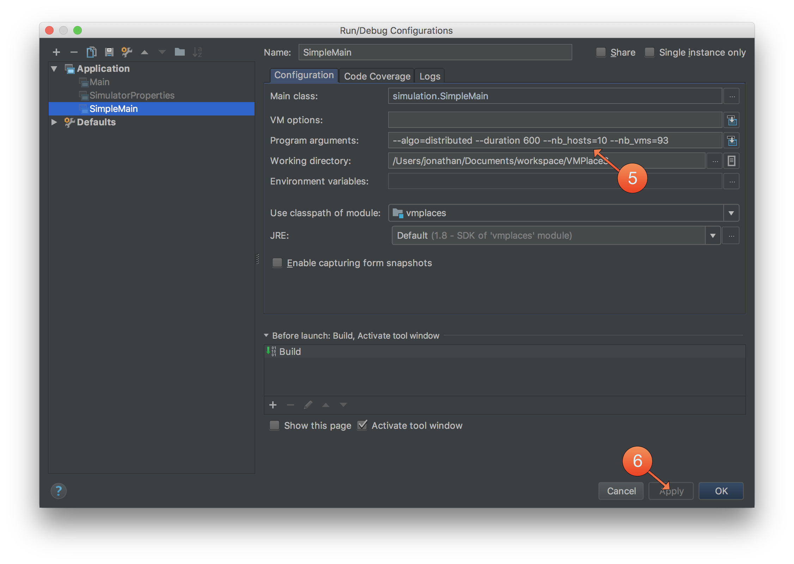

Getting Started with VMPlaceS
This "Getting Started" guide will cover the following points:
- Installation of VMPlaceS' dependencies
- Installation of VMPlaceS
- Creation of a Simulation Resolver
- Creation of a Reconfiguration Planner
- Running a simulation
I- Installation of VMPlaceS' dependencies
Before installing VMPlaceS, we need to install some dependencies:
- Python
- SBT
- Simgrid
These dependencies can easily be installed by using a package manager. We provides instructions for brew and APT.
A- via brew (macos)
B- via APT (linux)
II- Installation of VMPlaceS
First, clone the git repository of VMPlaceS:
Then, browse in the VMPlaceS folder and run those two commands in order to build a java jar archive of VMPlaceS:
To validate the installation of VMPlaceS and its dependencies, run the following command:
A simulation (based on a simple scheduling algorithm implemented in VMPlaceS) should start and simulate the functioning of a small cloud infrastructure during 1800s.
III- Implementing a new scheduling algorithm in VMPlaceS
A- Creation of a Simulation Resolver
Create a new java file located in src/main/java/simulation/ExampleResolver.java with the following content :
B- Creation of a Reconfiguration Planner
Create a new java file located in src/main/java/scheduling/example/ExampleReconfigurationPlanner.java with the following content :
C- Creating a deployment file
Add the following lines in the "algorithms" section of the config/algorithms.json file:
D- Adding the algorithms to VMPlaceS
Add the following lines in the "algorithms" section of the config/algorithms.json file:
IV- Run a simulation
A- Command line
B - IntelliJ Idea (IDE)
Step 1 and 2: Launch the simulation and stop it immediately
Step 3 and 4: Customize the simulation executable
 Step 5: Enter the parameters of the simulation
Step 6: Validate the configuration
Step 7: Run the simulation again